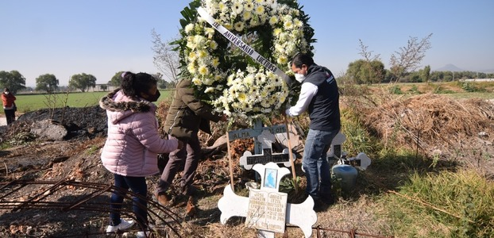
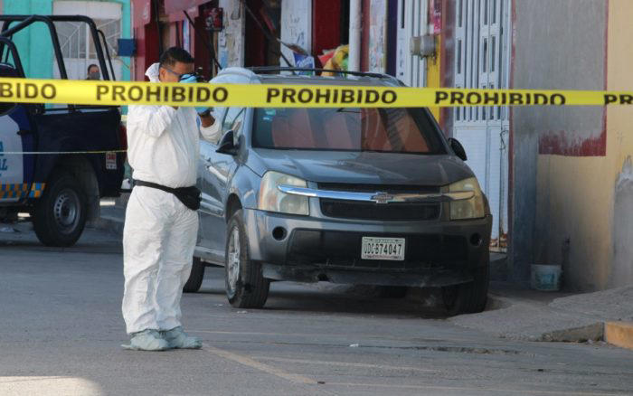
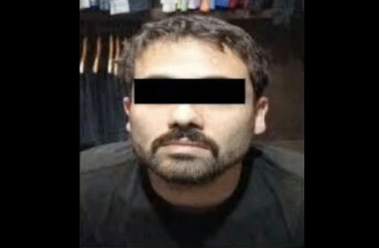

Ultima Hora
Alec Baldwin será acusado de homicidio involuntario tras disparar a directora de fotografía en rodaje.
La fiscal del Primer Distrito Judicial de Nuevo México, Mary Carmack-Altwies dio a conocer la decisión.
Tlahuelilpan: Familias lidian con la ausencia de sus familiares.
A cuatro años del incendio del ducto hay muchas heridas, muchas familias afectadas.

Ovidio Guzmán seguirá en el Altiplano; frenan una vez más entregarlo a Estados Unidos El narcotraficante es requerido por una Corte de Distrito de Columbia por delitos de conspiración para distribuir cocaína, metanfetamina y mariguana.
Joven es detenido por amenazar a su mamá con un cuchillo en Torreón.
Jonathan trató de escapar por la azotea, por lo que fue perseguido por los policías, que lograron detenerlo.
SRE está revisando solicitud de 'El Chapo' para regresar a México: AMLO.
El narcotraficante fue sentenciado en Estados Unidos a cadena perpetua, tras haber sido declarado culpable de ocho cargos de crimen organizado y narcotráfico.
64% de los mexicanos piensa que su ciudad es insegura: Inegi

Economía

París es el destino urbano líder del mundo, pero este año será superado por Pekín, señaló Julia Simpson, presidenta y directora del organismo.
Lo será al menos hasta 2027. Ni la migración de operaciones de carga al AIFA ni el servicio de pasajeros afectarán “la calidad crediticia”, reportÓ.
Política
AMLO pide a Profeco revisar alza en precios de seguros de autos.
Los precios de los seguros para autos particulares habían aumentado en promedio un 17 por ciento hasta la primera mitad del año pasado, y la tendencia continúa al alza.
Por juicio de Genaro García Luna, aceleran elección de jurado en EU.
En el segundo día de actividades los interrogatorios de la jueza Peggy Kuo, han sido más ágiles lo que ha llevado a una revisión de al menos 30 perfiles en un par de horas.

Tribunal Colegiado evaluará prisión preventiva de Emilio Lozoya por caso Odebrecht.